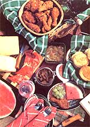

Few fruits receive - or deserve - as much praise as watermelon. Yet, despite having been cultivated for over 4,000 years, this delightful member of the cucumber family is usually enjoyed for only a few brief weeks in the summer because most people don't know how to preserve it.
The most common way of keeping the big fruits is in the form of watermelon-rind pickles or preserves. To make these sweet treats, first cut the pale-colored inner rind into 1" cubes and soak overnight in a solution of 4 tablespoons of salt per quart of water. The next day, drain off the liquid and cook the rind until tender.
Then, if pickles are your goal, make a syrup of 8 cups of sugar, 4 cups of vinegar, 8 teaspoons of whole cloves, 12 cinnamon sticks and a pinch of mustard seed. Boil the mixture, allow it to sit for 15 minutes, add the watermelon rind, and cook until the cubes become transparent and delicious.
Preserves are made in much the same way. Prepare the rind as before: Soak it overnight, cook it until tender and drain. Then make a syrup of 9 cups of sugar, 8 cups of water, 2 sliced lemons and 4 sticks of cinnamon. (Add whole cloves to the syrup if you like.) Boil the syrup for five minutes, add the melon cubes, then cook until they're clear.
Pour the pickles or preserves into clean, sterile jars and seal. (I don't know how well these recipes could be modified to use less - or a less processed - sweetener. Maybe some other readers will write in to share their experiences.)
As delicious as the above condiments are, it's the naturally sweet red "meat" of the melon that most people miss in the winter. Yet few devoted watermelon lovers know that this summer favorite can be dried for off-season treats - and, in many cases, it's even more delicious when dehydrated than it is when freshly cut. In fact, a watermelon that's barely palatable when fresh can be stunningly delectable when dried, since the process removes the water and concentrates the sugar content and flavor. Therefore, if you cut a melon and find that it's not quite sweet enough - or that it's slightly overripe - dry it! (The same applies to other melons, such as honeydew and cantaloupe.) You can also feel perfectly justified in eating the heart out of a melon and drying the rest, because the substandard meat will be as tasty dried as the heart was fresh.
Because of watermelon's high moisture content, it's extremely difficult to sun-dry. Ovens and commercial dehydrators, on the other hand, can do a superb job of drying melons.
Whatever the drying method, carve the melon into ½-inch thick slices (crossways, not stem to stern). Cut the pieces in half and remove the rind, then fit them snugly (with no overlapping) on a drying rack and place in your dryer or oven.
When using an oven, set it on the lowest heat and leave the door slightly cracked. Place a small fan (the smaller the better) near the oven door so that air will circulate around the slices. Check every hour or two, and when the pieces start to become leathery, turn them and allow the other side to dry. Leave the slices in the oven as long as they are sticky-moist. When the melon is no longer tacky to the touch, take out the slices, allow them to cool at room temperature, and then store in an airtight container.
In a dehydrator, put the slices on the lowest rack, or the one nearest the coil. If you're drying a full run of melon, leave the racks in place for three or four hours, then put the bottom rack on the top and move each rack one step downward. Keep rotating the trays every few hours until all the melon pieces are uniformly dry to the touch. Don't take the melon out while it's still gummy; if you do, it'll cling to your teeth. Instead, wait until it snaps when you bend it, like bacon that's been fried to a crispy state. [Editor's note: Be warned that dehydrating watermelon can be a time- and energy-intensive process. Our recipe tester found that it took 18 to 20 hours in an electric dehydrator set at 135 degrees to thoroughly dry ½-inch slices.]
To use the dehydrated watermelon, simply unwrap it and eat it as you would dried apples or fruit leather - but don't eat a huge amount of the dried melon, since it will reconstitute itself while being digested and can make you feel overfull.
For another out-of-season watermelon treat, cut out the meat and crush it in your hands. Place this juicy, pulpy mass in a wide-mouthed container, and add about 5 pounds of sugar for every 8 pounds of watermelon pulp. Sprinkle a tiny amount of brewer's yeast over the mixture, or use ¼ teaspoon of yeast that's been dissolved in a small amount of warm water until it's started to work. (If it's available, wine yeast also works well.) Stir the yeast into the pulp and sugar, then add enough water to make 2½ gallons. Next, attach a fermentation lock - either a store bought one or a homemade device consisting of a tube with one end inserted through a lid or cork and the other end submerged in a bottle of water, so that gas from the fermenting mixture can escape, but air can't enter.
After about 36 hours, bubbles should start to escape from the end of the tube in the bottle. Let the wine work until all bubbling has stopped, then wait another four or five days just to be sure the fermentation has ceased. At that point, drain or siphon off all the cleared wine, bottle it tightly, and age it at least until winter.
Then, on a cold January day, with sleet and snow flying, you can enjoy watermelon-rind preserves on your breakfast biscuits, watermelon-rind pickles with your lunch and dinner, and a slice of dried watermelon as a between meal snack. When night falls, open a bottle of watermelon wine and enjoy a glass or two in front of a crackling fire. By then, you're sure to feel mighty good about the time you spent on watermelon preservation during the previous July - and you can look forward to doing more of the same, come next summer.
|
 MOTHER EARTH NEWS STAFF Watermelon makes a tasty treat at any picnic - and year-round! |
|
|